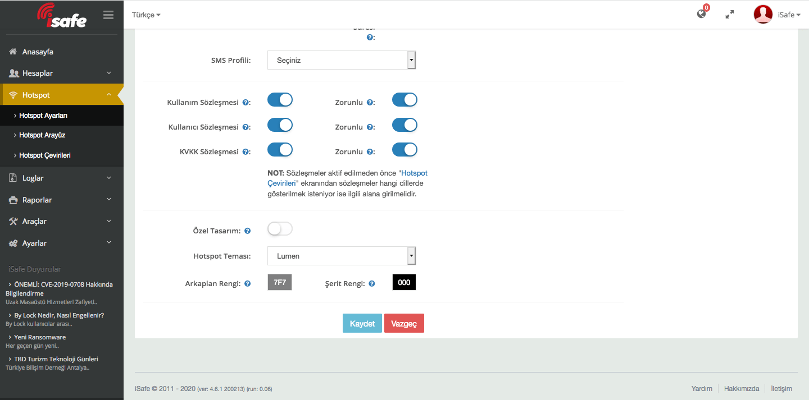
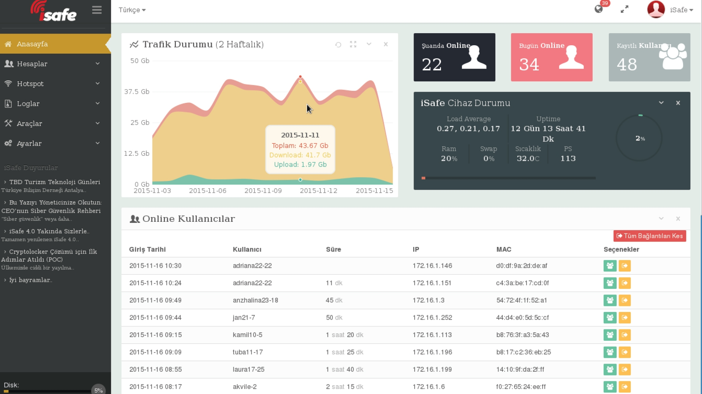
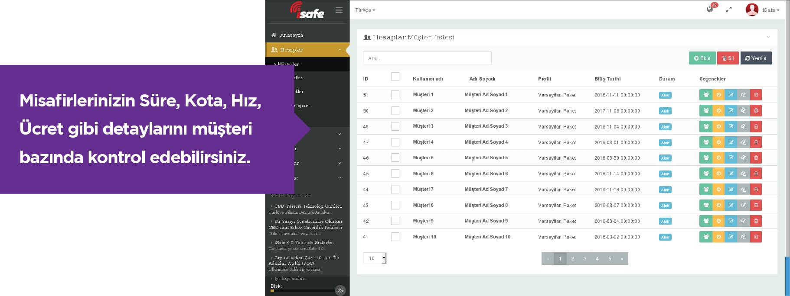

iSafe İnternet Güvenlik ve Loglama Sistemi
5651 sayılı yasaile internet kullanılan yerlerde kullanıma ait trafik bilgilerinin zaman (hash) damgası ile birlikte saklanması ve gizliliğinin sağlanması zorunlu hale getirilmiştir.iSafe, internet verilerinin 5651 nolu yasada belirtildiği şekilde muhafazasını ve gizliliğini sağlayan, yazılım + donanım olarak sunulan bir hotspot çözümüdür.
|
|
GELİŞMİŞ HOTSPOTMisafirleriniz için “Aynı Anda” Çok Seçenek:Sunduğunuz internet hizmetini kullanmak isteyen misafirlerinize birden fazla hotspot giriş yöntemini “aynı anda” kullandırabilirsiniz. Tek tıkla müşterileriniz, Oda no, e-posta, Pasaport, TC Kimlik, Kullanıcı adı ve şifre gibi farklı yöntemlerle giriş yapabilirler. Aynı zamanda çoklu dil desteği ile giriş ekranının müşterinizin diline göre görüntülenmesini sağlayabilirsiniz. |
Personelinizin İnternet Kullanımı da Kontrol Altında: Personellerinize özel bir giriş ekranı ile daha sınırlı ve kontrol edilebilir bir internet kullanımı sunabilirsiniz.
SMS ile İnternete Girmek Çok Kolay: Cep telefonu ile yapılan kayıt sonrası müşterinizin alacağı SMS ile internete giriş yapmasını sağlayabilirsiniz.
Ortak Alanlarda Kimlik Numarası Kolaylığı: TC. Kimlik numarasını Nüfus Genel Müdürlüğü’nden otomatik olarak kontrol ederek internet çıkışı sağlayabilirsiniz. Özellikle Cafeler, AVM’ler, Havaalanları, Belediyeler, Hastaneler gibi genel kamu alanlarında rahatlıkla kullanılabilir.
Misafirlerinizden Mesaj Var: Müşterileriniz hotspot ekranından size mesaj gönderebilirler. Bu özelliği aynı zamanda müşteri anketlerinin doldurulması için de kullanabilirsiniz.
ISAFE İLE KVKK’YA UYUM
|
iSafe KVKK’nın ön gördüğü
gibi zorunlulukları yasaya uygun şekilde gerçekleştirir. Ayrıca hotspot ekranınızda “Kullanım Sözleşmesi”, “Kullanıcı Sözleşmesi” ve “KVKK Sözleşmesi” ile ilgili onay butonları aktif edilerek, kullanıcının sözleşmeyi kabul edip ağa bağlanması zorunlu kılınabilmektedir. |
 |
|  |
YENİLENEN YÖNETİM PANELİ İLE TÜM BİLGİLER TEK EKRANDA iSafe'in yenilenen yönetici ara yüzü ile tüm internet kullanım bilgilerine, hesaplara, online kullanıcılara, trafik durumuna ve log bilgilerine tek ekrandan ulaşabilirsiniz. Aynı ekran üzerinden yetkilendirme işlemlerini de yönetebildiğiniz gibi, iSafe güncelleştirmelerini ve tüm geliştirmelerin takibini rahatlıkla yapabilirsiniz. |
|  |
PARA KAZANINİnternet Hizmetini Hem Ücretli, Hem Ücretsiz Aynı Anda Verebilirsiniz |
|
Yenilenen Yönetim Paneli ile kullanıcı profillerini istediğiniz gibi oluşturabilir, ücretli ve ücretsiz internet hizmetini verebilirsiniz. Herhangi bir ek donanıma ihtiyaç duymazsınız. Kullanıcıların zaman, kota, bağlantı hızı gibi özelliklerini belirleyerek internetinizi en verimli şekilde yönetirsiniz. |

|
iSAFE’İN DİĞER AVANTAJLARI
|
UYUMLU OLDUĞU PROGRAMLARBilinen tüm otel yazılımları, mysql, mssql vb. tüm veritabanları ile entegre çalışır. Fidelio, Opera, Mod, Sispar, Elektra, AmonRa, Rmos, Sedna, Sentez, Asyasoft, İbem ile entegrasyonu hazırdır. |